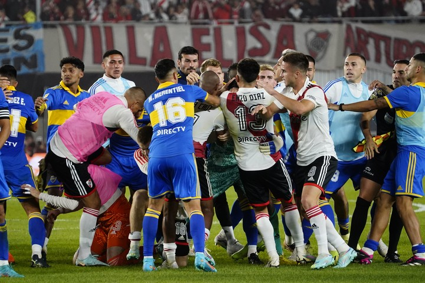

Un poco de lo que es

Boca Juniors es más que un club de fútbol; es un símbolo de pasión, tradición y éxito. Su rica historia, su impacto en la comunidad y su capacidad para inspirar a millones de personas alrededor del mundo hacen de Boca Juniors una institución única. Con una visión puesta en el futuro y un legado que sigue creciendo, Boca Juniors continúa escribiendo nuevas páginas en la historia del deporte mundial. Desde sus humildes comienzos en La Boca hasta su estatus actual como gigante del fútbol, Boca Juniors sigue siendo un faro de esperanza y orgullo para sus hinchas y para todos aquellos que creen en la magia del fútbol.
El Club Atlético Boca Juniors, fundado el 3 de abril de 1905 en el barrio de La Boca, Buenos Aires, es una de las instituciones deportivas más emblemáticas y reconocidas de Argentina y Sudamérica. Desde sus humildes inicios, Boca Juniors ha crecido hasta convertirse en un gigante del fútbol mundial, con una rica tradición y una base de aficionados extremadamente leal.

El estadio de Boca Juniors, conocido popularmente como La Bombonera, es uno de los recintos más icónicos del fútbol mundial. Inaugurado el 25 de mayo de 1940, su nombre oficial es Estadio Alberto J. Armando. La Bombonera es famosa por su estructura única, con una tribuna vertical que crea una atmósfera inigualable. Con capacidad para más de 54,000 espectadores, el estadio vibra con cada partido, especialmente durante los Superclásicos contra River Plate. La acústica del estadio y la pasión de los aficionados generan un ambiente electrizante que intimida a los rivales y emociona a los locales.
Desde sus primeros días, Boca Juniors se estableció rápidamente como uno de los equipos más fuertes de Argentina. El club ha sido un constante protagonista en la liga argentina y en competiciones internacionales, construyendo una rica historia llena de momentos memorables y partidos épicos. La tradición de Boca Juniors está marcada por su espíritu competitivo y su capacidad para sobreponerse a los desafíos.
El enfrentamiento entre Boca Juniors y River Plate, conocido como el Superclásico, es uno de los partidos más esperados y seguidos del mundo. Esta rivalidad, que trasciende el deporte, refleja profundas conexiones culturales y sociales en Argentina. Los partidos entre ambos equipos son eventos cargados de tensión y emoción, atrayendo la atención de aficionados y medios de comunicación a nivel global. El Superclásico no es solo un partido de fútbol; es un fenómeno cultural que paraliza a Argentina y captura la imaginación de millones de personas en todo el mundo.

Boca Juniors no es solo un club de fútbol. Su influencia se extiende a una variedad de deportes y actividades sociales. El club ofrece programas en deportes como baloncesto, voleibol y gimnasia, promoviendo la actividad física y el bienestar en la comunidad. Además, Boca Juniors lleva a cabo diversos proyectos sociales en su barrio y en otras áreas, contribuyendo al desarrollo social y apoyando a sectores vulnerables. Estos proyectos incluyen programas educativos, de salud y recreativos que buscan mejorar la calidad de vida de los residentes locales.

La hinchada de Boca Juniors, conocida como "La 12", es famosa por su lealtad y pasión. Los aficionados de Boca son un elemento fundamental del club, creando una atmósfera única en cada partido. Su apoyo incondicional ha sido un factor clave tanto en los momentos de gloria como en los desafíos, demostrando un vínculo inquebrantable con el club. La pasión de los hinchas se manifiesta en cada rincón del estadio, con cánticos, banderas y un aliento constante que dura los 90 minutos de juego.
Boca Juniors ha sido cuna de grandes talentos del fútbol mundial. Jugadores legendarios como Diego Maradona, Juan Román Riquelme y Carlos Tevez, entre muchos otros, han pasado por sus filas, dejando una huella imborrable. La formación de jóvenes talentos sigue siendo una prioridad para el club, que invierte en sus divisiones inferiores y en la infraestructura necesaria para desarrollar futuros ídolos. La cantera de Boca Juniors es reconocida por producir futbolistas de alta calidad que no solo triunfan en el equipo principal, sino que también dejan su marca en ligas de todo el mundo.

El club continúa invirtiendo en la mejora de sus instalaciones, no solo en el estadio, sino también en sus campos de entrenamiento y en las instalaciones para los deportes amateurs. Boca Juniors está comprometido con el desarrollo de sus atletas y la mejora de la experiencia de sus aficionados. Planes de expansión y modernización están siempre en marcha, con la visión de mantener al club en la vanguardia del deporte mundial.